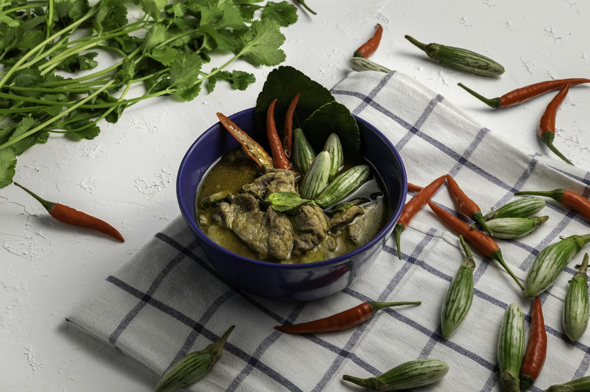

Thai Green Curry
Green curry paste fried in cracked coconut cream, with chicken, Thai aubergine and basil, balanced with fish sauce and lime.

The step that separates a fragrant green curry from a flat one takes four minutes and is usually skipped. Coconut cream is heated until it splits and the oil rises, and the paste is fried in that oil until it darkens and smells of makrut lime and galangal. Only then does the rest of the coconut milk go in. Skip it and you are boiling paste in liquid, which tastes raw and one-dimensional no matter how much fish sauce you add afterwards.
Ingredients
Quantities scale automatically. Cooking times stay the same.
For the curry
To season
To serve
Equipment
- Wok or wide skillet
- Rice pan
- Wooden spoon
Method
-
1
Crack the coconut cream
Open the cans without shaking and spoon the thick cream from the top into a wok. Heat over medium-high for 3-4 minutes until it bubbles, thickens and the clear oil visibly separates out. This is the step that makes the curry.
-
2
Fry the paste
Stir the curry paste into that hot oil and fry 2-3 minutes, pressing it against the pan, until it darkens a shade and smells intensely aromatic. It should sizzle rather than simmer.
-
3
Seal the chicken
Add the chicken strips and turn them through the paste for 3-4 minutes until coated and no longer pink outside.
-
4
Add the rest of the coconut milk
Pour in the remaining coconut milk with the lime leaves and aubergine. Bring to a gentle simmer and cook 8-10 minutes, until the aubergine is tender and the chicken is cooked through. Do not let it boil hard or the coconut milk will separate.
-
5
Add the beans and season
Stir in the green beans and cook 3 minutes more. Season with the fish sauce, sugar and lime juice, then taste and adjust. A green curry should land salty, sweet, sour and hot all at once, with no single note dominating.
-
6
Finish with basil
Take the pan off the heat, stir through the Thai basil and sliced chilli, and let the residual heat wilt them. Serve straight away with jasmine rice.
Cook’s tips
- Do not shake the coconut milk cans. You need the thick cream from the top separately, and shaking makes the cracking step impossible.
- Taste and adjust at the end, always. Curry pastes vary enormously in salt and heat between brands, so the fish sauce and sugar quantities here are a starting point rather than a rule.
- Add the basil off the heat. Boiled Thai basil turns black and loses the aniseed note it is there for.
Variations
- Use prawns, firm white fish or sliced beef; add prawns in only the last 3 minutes.
- For a vegan version, use tofu and vegetables, swap the fish sauce for light soy or a vegan fish sauce, and check the paste for shrimp paste.
- Bamboo shoots, sugar snap peas, courgette and red pepper all work in place of the aubergine.
Storage and make-ahead
Keeps 3 days in the fridge and the flavour deepens overnight. Reheat gently without boiling. It freezes for 2 months, though the coconut milk can look grainy on thawing; whisk it as it warms and it will come back together.
Nutrition per serving
| Calories | 486 kcal |
|---|---|
| Protein | 32 g |
| Carbohydrates | 14 g |
| Fat | 34 g |
| Fibre | 4 g |
| Sugar | 7 g |
| Sodium | 1040 mg |
Nutrition is estimated from ingredient averages and will vary with brands and portioning.